Rig Animator -
Como usar
¿Para qué sirve este kit?
Tiene como objetivo facilitar la implementacion de animaciones por uniones de objetos y fotogramas clave, almacenando sus estructuras en variables que permiten reutilizar esqueletos, animaciones y fotogramas clave.
Limitaciones:
Las estructuras del Kit presentan limitaciones de capacidad debido a la forma en que se almacenan sus datos. Estas son las siguientes:
-
Armature: Puede contener un máximo de 50 uniones de objetos (Joints).
-
Keyframe: Debido a que un Armature puede contener hasta 50 uniones, cada Keframe puede almacenar un máximo de 50 rotaciones y posiciones correspondientes.
- Animation: Puede almacenar un máximo de 100 Keyframes.
Sumado a esto, debe de contener como mínimo 2 Keyframes y que la suma de sus tiempos de duración sea mayor a 1/30 segundos (aproximadamente 0.0333).
- Animation Controller: Este es un caso especial, pues únicamente cuando se utiliza dentro de un bucle para animar varios Armatures simultaneamente, puede gestionar un máximo de 50 Armatures
Scripts:
Este kit contiene múltiples scripts que separaremos según su funcion.
Scripts de Creación:
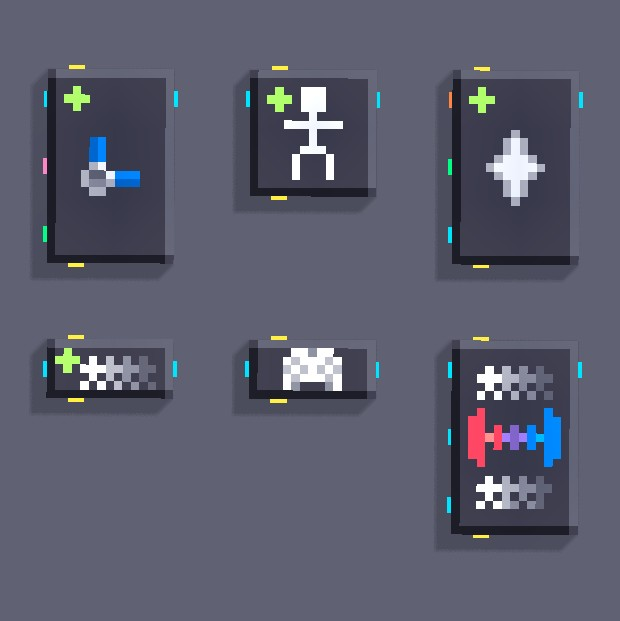
- Create Joint: Crea una unión entre dos objetos. Recibe
un Joint padre (o -1 si se trata del Joint raíz),
el objeto hijo y la posición global del pivote de unión. Devuelve una estructura Joint.
- Create Armature: Recibe una lista de Joints
y devuelve una estructura Armature. Es indispensable para utilizar el sistema de animación,
ya que es el objeto animable del Kit.
- Create Keyframe: Recibe dos listas de posiciones y rotaciones,
que de preferencia deben tener el mismo tamaño que el arreglo de Joints
del Armature que se piensa animar y sus índices corresponder a los Joints.
Devuelve una estructura Keyframe.
- Create Animation: Recibe una lista de Keyframes y devuelve una estructura Animation con la secuencia de fotogramas clave.
- Anim Controller: Genera un Controller
encargado de gestionar la ejecución de una animación.
Permite introducir un índice del 0 al 49 para utilizar
una instancia independiente, útil para animar varios
Armatures mediante un Loop For Anims.
- Make Transition: Recibe un Controller
y devuelve una animación transición entre el estado
actual de dicho Controller y el inicio de otra
animación. Permite establecer la duración de la transición.
Advertencia
La animación de transición generada ocupa siempre un índice reservado de la lista global de animaciones (0) y
el Keyframe que almacena el estado inicial de la transición utiliza el índice 10000 de la lista global de estos objetos.
Por lo tanto:
-
Por lo tanto: Una nueva ejecucion de Make Transition puede sobreescribir una transicion anterior.
-
Debe evitarse utilizar el Keyframe 10000 para otras animaciones, ya que podría ocasionar conflictos con el sistema de transiciones.
Scripts de Edición:
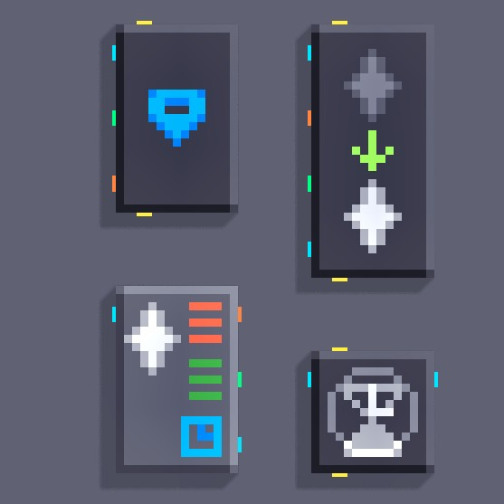
- Set Init Pos: Modifica la posición local y rotación
global inicial del objeto hijo asociado a un Joint.
- Edit Keyframe: Autodescriptivo, permite modificar la duracion y
las listas de rotación y posición.
- Get Keyframe Def: Permite consultar las listas y duración de un Keyframe.
- Get Time: Recibiendo un Controller, devuelve
el tiempo actual de reproducción en segundos desde el inicio de la animación que gestiona en ese momento.
Scripts de Animación:
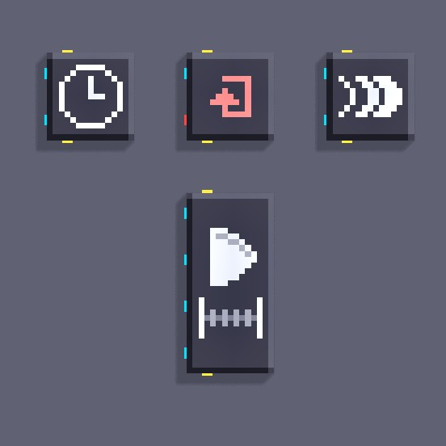
- Set Time: Establece el tiempo de reproducción del Controller en el segundo recibido como entrada.
- In Loop: Configura el Controller para reproducir las animaciones en bucle, reiniciando su reproducción al acabar.
- Set Speed: Modifica la velocidad de reproducción de un Controller, siendo 1 la velocidad normal.
- Play Animation: Recibe un Controller y permite ejecutar una animación sobre un Armature. También permite definir un intervalo de mestreo entre fotogramas de la animación dentro de lo que Fancade permite.
(Por ejemplo, un intervalo de 1/20 pretende forzar la animación a actualizarse a 20 fps, aunque en Fancade no se pueda garantizar).
Scripts de Control:
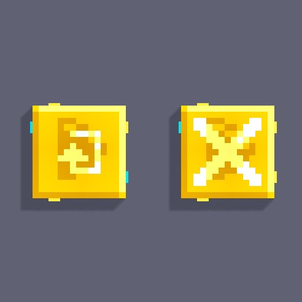
- Loop For Anims: Ejecuta un bucle con una cantidad de iteraciones definida por el usuario, proporcionando una variable local para identificar cada iteración.
Lo que ejecuta sucede durante el Late Update de Fancade y su función principal es permitir animar más de un Armature con un solo Controller y Play Animation.
- Animation Ended: Permite ejecutar dos bloques de código diferentes dependiendo de si la animación gestionada por un Controller ha finalizado o continúa en ejecución.
Ejemplo guiado:
A continuación, se presentarán los pasos para un ejemplo de animación en bucle y transición con este Kit.
(Parecido al ejemplo en el nivel "Transition", pero mejor organizado).
- Crear un Armature:
Toda la creacíon de estructuras del Kit debe realizarse, preferentemente, durante la ejecución de un Play Sensor
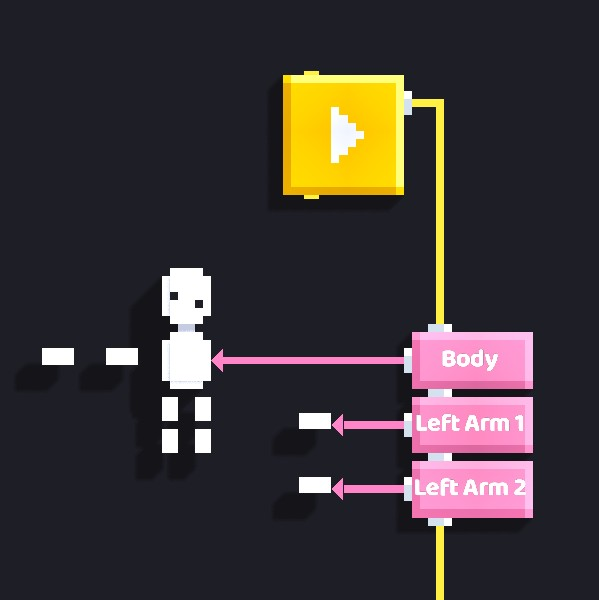
Para comenzar, necesitamos un conjunto de objetos que conformarán nuestro esqueleto. Guardaremos únicamente aquellos que deseamos animar.
En este ejemplo, solo animaremos el brazo de un personaje.
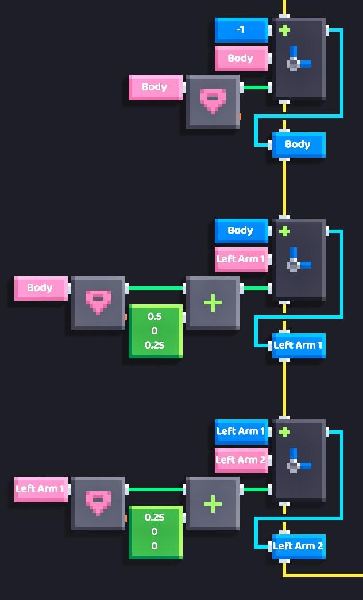
Para crear las uniones, utilizaremos el script Create Joint. De forma similar a como se crean las Constraints de Fancade, este nos permitirá establecer uniones entre objetos definiendo sus respectivos pivotes.
Para establecer la jerarquía del esqueleto, utilizamos Joints previamente creados como padres para las nuevas uniones.
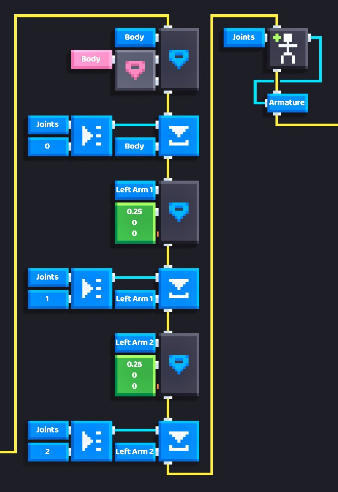
Para definir la pose inicial de los Joints, utilizaremos Set Init Pos, indicando la posición local respecto al pivote y la rotación global del objeto hijo.
Al mismo tiempo, almacenaremos cada Joint en una lista, que posteriormente usaremos para crear un Armature mediante el script Create Armature y que guardaremos para su uso posterior.
- Crear una Animación:
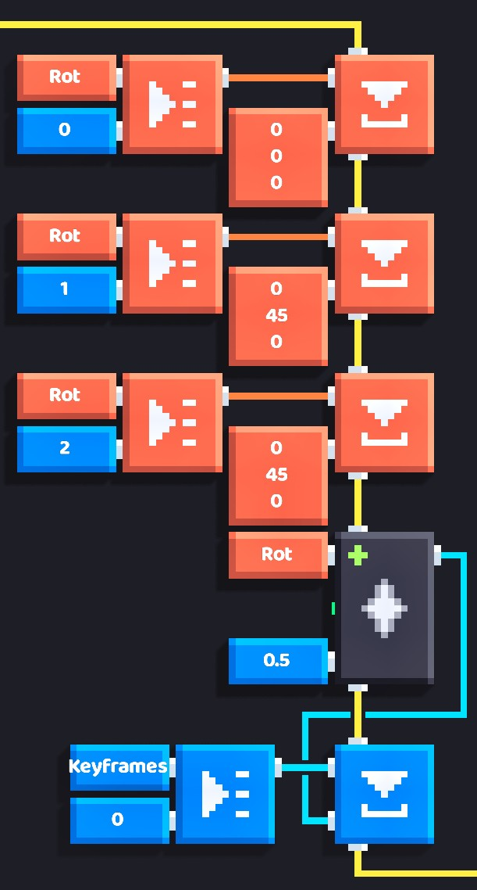
Para construir una animación necesitamos por lo menos 2 Keyframes. Comenzaremos definiendo una lista de rotaciones (No animaremos posiciones asi que se omitirá la lista de posiciones) que utilizaremos para establecer la pose del fotograma. A su vez, les daremos un tiempo de duración y lo guardaremos en una lista de fotogramas.
Las listas de rotación y posición corresponden por índice a los Joints de la lista usada para crear un Armature
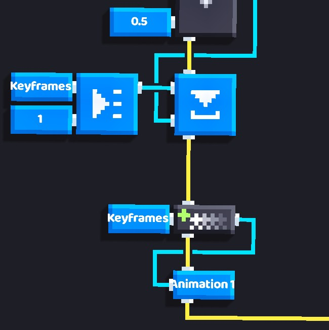
Una vez creados por lo menos 2 Keyframes, cuya duracion total debe ser mayor a 1/30 de segundo, podremos usar la lista para generar una animacion válida.
Para esto utilizaremos Create Animation y guardaremos el resultado como Animation 1.
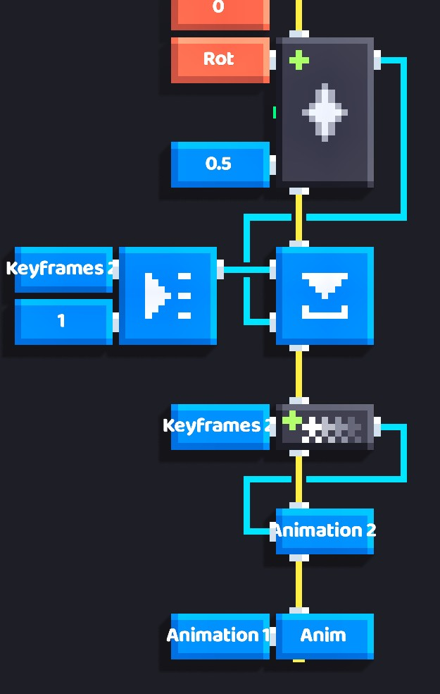
Después, vamos a crear una segunda animación siguiendo el mismo proceso de antes, pero esta la almacenaremos como Animation 2.
Finalmente definimos en una variable Anim la animación que queremos ejecutar (en este caso la primera).
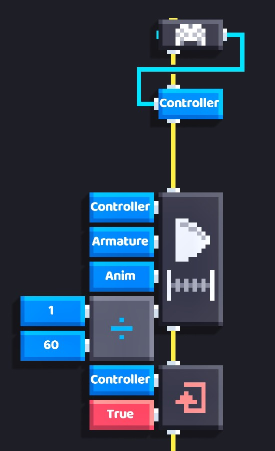
Para animar el Armature, necesitaremos un Anim Controller> y utilizarlo en Play Animation.
Configuraremos este último indicvando nuestro Armature como objetivo, la variable Anim como animación a ejecutar y un intervalo de muestreo de 1/60, que intenta conseguir el efecto de ir a 60 fps dentro de lo que permite Fancade.
Finalmente, agregaremos un In Loop con su valor establecido en True para indicar que la animación debe reproducirse en bucle.
- Crear una Transición:
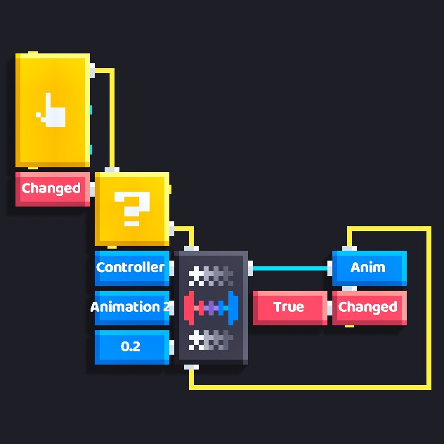
Para solicitar una transición, usaremos Make Transition dentro de un evento de click.
Antes de ejecutarlo, comprobaremos el valor de una variable de control Changed, que representará si la transición ya fue solicitada, con el fin de evitar que se llame más de una vez.
Make Transition recibira nuestro Controller, la animación de destino (en este caso Animation 2) y una duración de transición en segundos.
La animación resultante se guardara en Anim y estableceremos Changed como True.
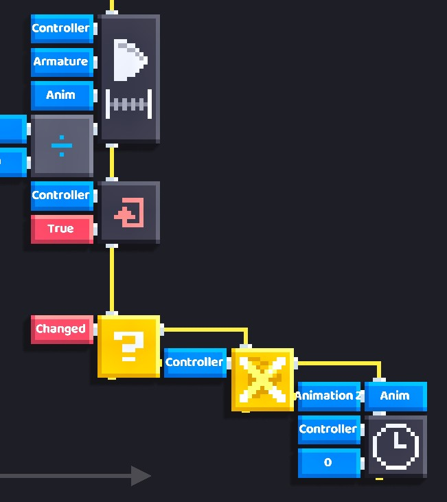
Debajo de nuestro código de reproducción, agregaremos una comprobación que, cuando Changed sea True, verificará mediante Anim Ended si la transición ha finalizado.
Cuando esto ocurra, estableceremos Animation 2 como la animaión actual en la variable Anim y utilizaremos Set Time para reiniciar su tiempo de reproducción a 0.
De esta manera, la segunda animación continuará reproduciendoce en bucle al acabar la transición.
Nombres reservados
Este kit, utiliza algunas variables globales para contener las estructuras en listas. A continuación se mencionarán por precausión o por si te resulta útil:
¡Gracias por leer! Espero que este kit te sea de utilidad para algún proyecto que tengas en mente, a pesar de sus limitaciones...
¡Diviertete creando! :D
— Elmini/Juegos Random